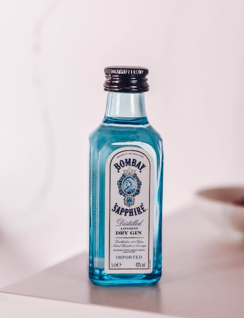
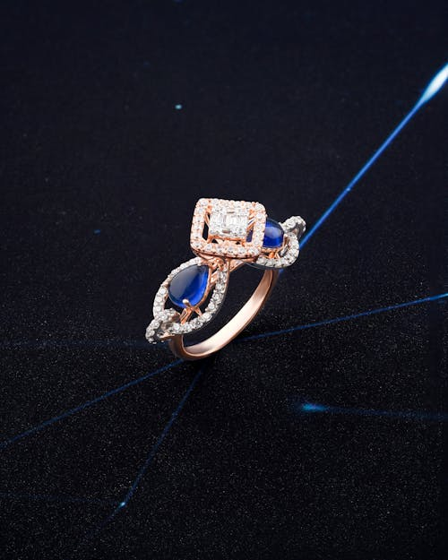

Página Azul
Essa é a página azul de verdade. Então, se você achou que aquela outra era a azul, espero que pelo menos tenha aproveitado as curiosidades
Falando em curiosidades, vamos para as curiosidades sobre a cor azul
Curiosidades - Azul
- A cor azul era associada à alta riqueza, pois o pigmento era extraído da pedra preciosa lápis-lazúli;
- Antigamente, o azul era mais associado à delicadeza feminina, enquanto o rosa à masculinidade;
- Apesar do céu e dos mares serem azuis, a cor é raramente encontrada em seres vivos, mesmo sendo uma cor primária (das 3 RGB);


- Frequentemente associada, no campo do marketing e Design, à sabedoria, tecnologia, calma, confiança, segurança e inteligência;
- Cerca de 45% da população mundial tem a cor azul como sua favorita.
Pronto para seguir?
Calma, quantas cores já foram?
Ah, não! Já está perto do fim :( poxa, mas foi tão divertido, fica mais um pouco, por favor!
Não quer ficar? Tudo bem, vou te mostrar a saída do labirinto... Qual é mesmo a cor que falta?
Fique atento aos detalhes! <3